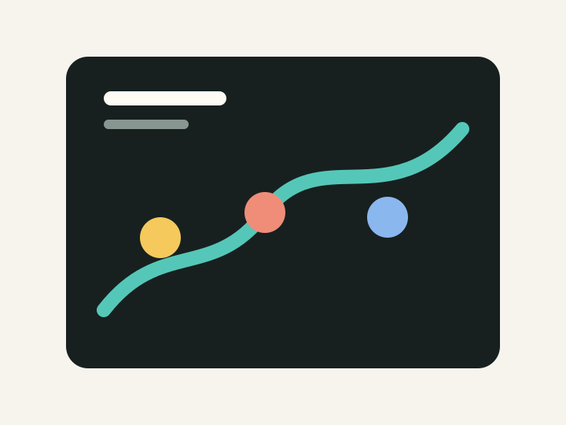

視線と身体感覚を用いたインタラクション実験
身体の微細な動きと画面上の反応を結び、操作感の変化を観察するための試作です。

Technology
- p5.js
- MediaPipe
- JavaScript
- UX Study
視線や姿勢の変化を入力として扱い、画面内の線や図形のふるまいがどのように操作感へ影響するかを検証しました。プロトタイプを短いサイクルで作り、体験の違和感や理解しやすさを観察しています。

身体の微細な動きと画面上の反応を結び、操作感の変化を観察するための試作です。
Technology
視線や姿勢の変化を入力として扱い、画面内の線や図形のふるまいがどのように操作感へ影響するかを検証しました。プロトタイプを短いサイクルで作り、体験の違和感や理解しやすさを観察しています。
